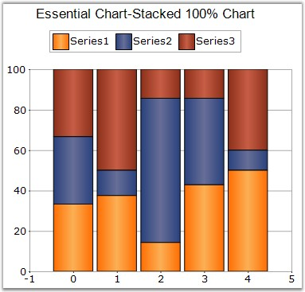

This chart type displays multiple series of data as stacked Columns ensuring that the cumulative proportion of each stacked element always totals 100 percent. The y-axis will hence always be rendered with the range 0 - 100.

Figure 55: A 100 percent StackedColumn Chart
|
Details | |
|
Number of Y values per point |
1. |
|
Number of Series |
Two or more. |
|
SupportMarker |
No. |
|
Cannot be Combined with |
Doughnut, Pie, Bar, Stacked Bar charts, Polar, Radar, Pyramid, or Funnel. |
|
[C#]
ChartSeries series1 = this.chartControl1.Model.NewSeries("Series 1", ChartSeriesType.StackingColumn100); series1.Points.Add(0, 25.3); series1.Points.Add(1, 45.7); series1.Points.Add(2, 97.3); series1.Points.Add(3, 20.6); series1.Points.Add(4, 125.8); series1.Points.Add(5, 216.1); this.chartControl1.Series.Add(series1); |
|
[VB.NET]
Dim series1 As ChartSeries = Me.chartControl1.Model.NewSeries(" Series", ChartSeriesType.StackingColumn100) series1.Points.Add(0,25.3) series1.Points.Add(1,45.7) series1.Points.Add(2,97.3) series1.Points.Add(3,20.6) series1.Points.Add(4,125.8) series1.Points.Add(5,216.1) Me.chartControl1.Series.Add(series1) |
|
Customization Options |
|
Border, ColumnWidthMode, ColumnFixedWidth, DisplayShadow, DisplayText, DrawSeriesNameInDepth, ElementBorders, ImageIndex, Images LightAngle, LightColor, Rotate, Spacing, Spacing Between Series, ShadingMode, ShadowInterior, ShadowOffset, ZOrder, FancyToolTip, Font, Interior, LegendItem, Name, PointsToolTipFormat, SmartLabels, Summary, Text, TextColor, TextFormat, TextOffset, TextOrientation, Visible |
See Also
StackedArea100 Chart, StackedBar100 Chart